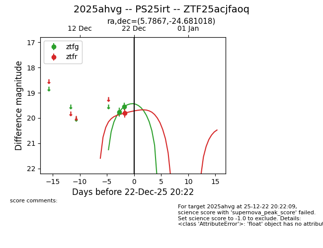
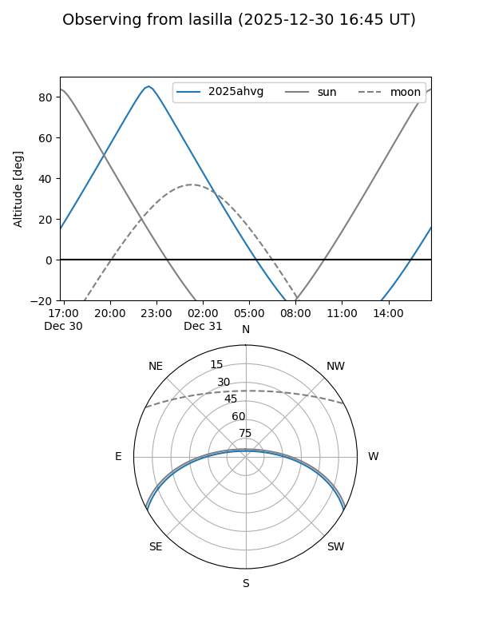
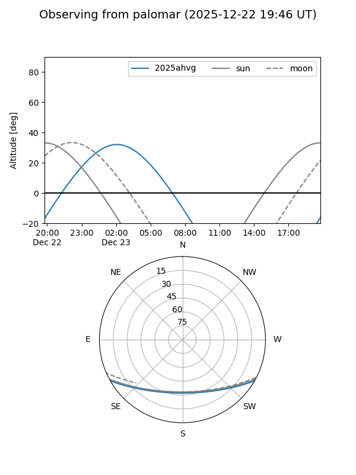
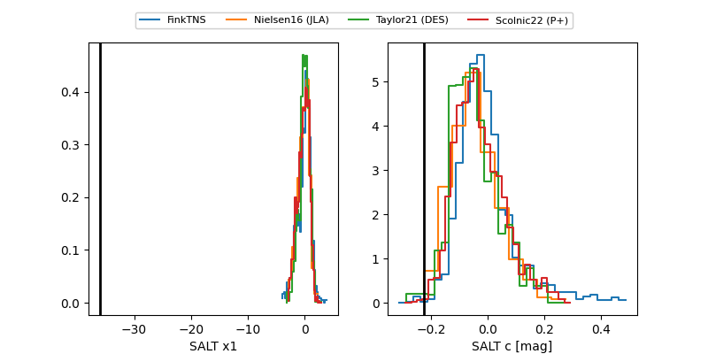

2025ahvg
Target 2025ahvg at 2025-12-22 20:48
Aliases and brokers:
FINK: fink-portal.org/ZTF25acjfaoq
Lasair: lasair-ztf.lsst.ac.uk/objects/ZTF25acjfaoq
ALeRCE: alerce.online/object/ZTF25acjfaoq
TNS: wis-tns.org/object/2025ahvg
YSE: ziggy.ucolick.org/yse/transient_detail/2025ahvg
alt names
ZTF25acjfaoq (ztf,fink_ztf)
2025ahvg (tns,yse)
PS25irt (panstarrs)
Coordinates:
equatorial (ra, dec) = 5.7867,-24.68102
equatorial (HMS+DMS) = 00:23:08.82,-24:40:51.67
galactic (l, b) = (52.3989,-83.18496)
Flags:
Photometry:
last ztfg=19.54, ztfr=19.80
2 ztfg, 1 ztfr detections
Lightcurve

Visibility


Additional plots
